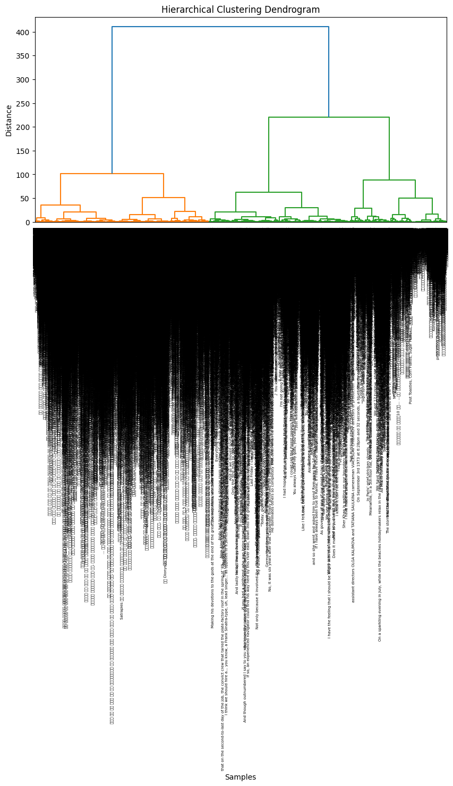

Clustering
Clustering
As a sort of unsupervised machine learning method, clustering entails assembling related items according to shared traits or properties. Comparable objects are grouped into distinct classes or categories in this way. Clustering algorithms do not require labeled data to be categorized.
Since clustering uses distance metrics to see how close data points are, let's look into distance metrics. 4 types of distances can be used to determine clusters, Euclidean, Manhattan, and Cosine.

Euclidean
The distance between two data points is determined by taking the square root of the sum of the squared differences between each data point's feature values. This is the most widely used distance metric in clustering. When the characteristics have comparable units of measurement and the data is continuous, it is frequently utilized.

Manhattan
The total of the absolute differences between the two data points' respective feature values is used to compute the distance between them using this distance metric. When characteristics have different units of measurement or the data is categorical, it is frequently employed. Since the distance between two points is determined only by the variations in their coordinates, it is less susceptible to outliers than the Euclidean distance metric.

Cosine
Using the cosine of the angle formed between two data points in high-dimensional space, this distance metric determines their separation. It's frequently applied to data with a lot of features where the size of the feature values doesn't matter, such text or image data. This project uses cosine similarity as a result.
Numeric data without labels is needed for clustering. Given that the project uses textual data, the text data will be converted into a high-dimensional numerical format utilizing word2vec and PCA. This was done in an effort to decrease the dimensionality of the data while maintaining the greatest amount of variance. In order to capture the semantic linkages between words, Word2Vec was utilized to produce dense vector representations for words based on their context. A common method in natural language processing (NLP) is called "word2vec," which creates distributed word representations in a continuous vector space. The word vectors created were later used to apply PCA on.
After applying PCA on the data, initially two clusters were used to categorize the data.
The data looks fairly categorized. To essentially get an idea of how many clusters to begin with, or how many clusters would be a good fit. A method known as elbow method is used. The elbow technique is used to figure out how many clusters in a dataset are best for k-means clustering. Plotting the within-cluster sum of squares (WCSS) against the total number of clusters is the first step in the process. The "elbow" point on the plot is the point at which the WCSS decreases at a much slower rate. This number represents the ideal number of clusters.
Elbow method suggests that 3 or 4 should be a good value of k to begin with, as the curve starts to flatten out after 4. This signifies that there's no real change after you increase the number of clusters from 4. Hence, let's plot an image to see how well 4 clusters categorize the data.
Another method that can be used to see which number of clusters can give a good fit is the silhouette method. It's an additional guideline for figuring out how many clusters, on average, a dataset should have to apply clustering algorithms like k-means. It gauges an object's cohesion—how similar it is to its own cluster—as opposed to separation—how similar it is to other clusters. A high silhouette score means that the object is well-matched to its own cluster and poorly matched to nearby clusters. The silhouette score goes from -1 to 1.
It can be seen from the above plot that 3 clusters has the highest score. Now, let's use k=3 to run k-means clustering.
It is a pretty good fit as the borders are pretty clear and it's visible how well the data is separated.
Another method of clustering is hierarchical clustering. It is a K-Means Clustering substitute with advantages and disadvantages of its own. It is used to put observations into the same group, just like k-means. Usually, it will determine how many clusters there are (from top to bottom or bottom to top). It does not, however, call for a predetermined number of clusters, in contrast to k-means. However, we can choose the distance metric to apply.
There are different types of hierarchical clustering.
Clustering (AGNES): Bottom up approach. Each observation starts as it's own cluster and merges with other observations. Other observations that are most similar. It will continue to do this until all the observations are in this one huge group.
Divisive Hierarchical Clustering: Top down approach. All observations are in one group, then they start to split the more different (heterogeneous) they are. This keeps on interating through until each observation is it's own cluster.
Similarly, there are different forms of linking to explain how to read the dendograms.
Complete Linkage Clustering: Obtains the distance between ALL observations between cluster1 and cluster2 and merges the cluster together if the distances are minimum.
Average Linkage Clustering: This computers distances between ALL the observations in cluster1 and cluster2 and averages the values.
Centroid Linkage Clustering: Calculates the centroid within each cluster and uses the distance between each centroid to determine what to merge.
Hierarchical clustering resulted to be way more computationally expensive than k-means. Hence, the data was reduced to 1/4th of the total data. The k-means depicts that 3 or 4 clusters would be good for the model. Analyzing the dendogram, hierarchical clustering similarly indicates three clusters.